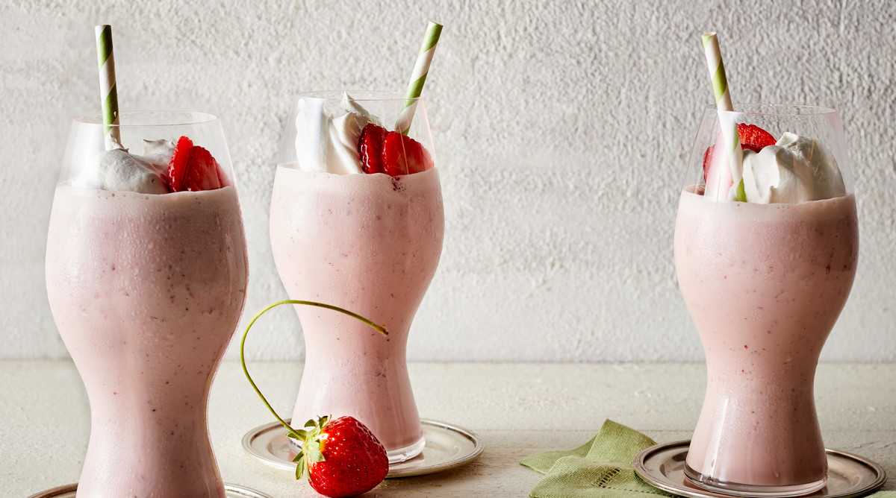

Strawberry milkshake
prep time:
10min
yield:
4
ingredients
12 ounces fresh strawberries, stemmed and sliced (about 2 cups sliced), plus more for garnish
3 cups vanilla ice cream
1/2 cup whole milk
1 teaspoon vanilla extract
Sweetened whipped cream
Order Now
steps
Process strawberries, ice cream, milk, and vanilla in a blender until smooth, about 45 seconds. Pour into glasses; garnish with whipped cream and strawberries.